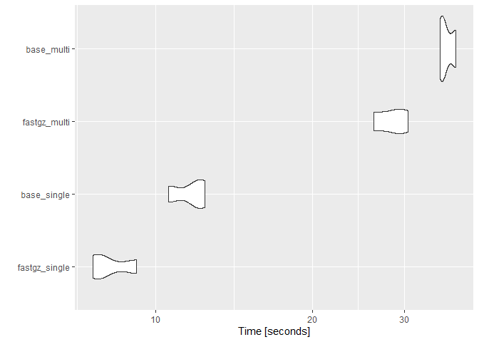

Why?
Files of non-trivial sizes are typically gzip files. base::readLines() is suprisingly quick at reading them, but we can go a tad faster. On the other hand, readr::read_lines() decompresses the file before reading it, which is… less than ideal.
{fastgz} contains two simple helpers:
-
fastgz::read_gz_file()reads an entire file(s) into a singlecharacter() -
fastgz::read_gz_lines()is the equivalent ofbase::readLines()/readr::read_lines()
Rather than relying the apply()/purrr::map() families, you can pass multiple file paths to both.
Benchmarks
library(fastgz)
library(microbenchmark)
library(ggplot2)
file_dir <- readRDS("big_file_path")
files <- dir(file_dir, pattern = "\\.gz$", full.names = TRUE)[1:3]
scales::number_bytes(sum(file.size(files)))res <- microbenchmark(
fastgz_single = fastgz_single <- read_gz_lines(files[[1]]),
base_single = base_single <- readLines(files[[1]]),
fastgz_multi = fastgz_multi <- read_gz_lines(files),
base_multi = base_multi <- unlist(lapply(files, readLines),
use.names = FALSE)
,
times = 3
)
identical(fastgz_single, base_single) && identical(fastgz_multi, base_multi)#> Unit: seconds
#> expr min lq mean median uq max neval
#> fastgz_single 7.578187 7.728361 8.210194 7.878535 8.526197 9.17386 3
#> base_single 10.570881 11.259491 11.639672 11.948101 12.174068 12.40003 3
#> fastgz_multi 26.185492 27.386044 28.428467 28.586596 29.549954 30.51331 3
#> base_multi 35.149941 35.464957 36.197976 35.779973 36.721994 37.66401 3